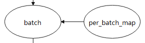

Dataset
Ascend GPU CPU 入门

数据是深度学习的基础，高质量数据输入会在整个深度神经网络中起到积极作用。
在网络训练和推理流程中，原始数据一般存储在磁盘或数据库中，需要首先通过数据加载步骤将其读取到内存空间，转换成框架通用的张量（Tensor）格式，然后通过数据处理和增强步骤，将其映射到更加易于学习的特征空间，同时增加样本的数量和泛化性，最后输入到网络进行计算。
整体流程如下图所示：

本章节介绍mindspore.dataset(以下简称Dataset)中的数据加载、数据处理和增强等操作涉及到的一些基础概念。
数据集

数据集为一组样本的集合，数据集的一行即为一个样本包含一个或多个特征，此外还可能包含一个标签。数据集都需要符合一定规范要求，便于评估模型的效果。
Dataset支持多种格式数据集，包括MindSpore自研数据格式MindRecord，常用的公开图像数据集和文本数据集，用户自定义的数据集等。 详细的Mindspore支持的数据集请参考: MindSpore支持数据集。
Dataset也支持将常用的数据集和用户自定义的数据集转为MindSpore数据格式（MindRecord），详情可参考： 转换数据集为MindRecord。
数据集加载

数据集加载使得模型训练时能源源不断地获取数据进行训练。
Dataset对多种常用的数据集提供对应的类来实现数据集的加载，同时对于不同存储格式的数据文件，Dataset也有对应的类来进行数据加载。MindSpore数据集加载请参考：MindSpore数据集加载。
Dataset提供了多种用途的采样器（Sampler），采样器负责生成读取的index序列，Dataset负责根据index读取相应数据，帮助用户对数据集进行不同形式的采样，以满足训练需求，解决诸如数据集过大或样本类别分布不均等问题，注意，采样器负责对样本做filter和reorder操作，不会执行Batch操作。
Mindspore的数据采样介绍请参考：MindSpore数据采样。
数据处理
Dataset将数据加载到内存后，数据按Tensor形式进行组织。同时Tensor也是数据增强操作中的基本数据结构。
Shuffle操作
训练一般是多个epoch，shuffle操作打乱数据的顺序，保证训练时每个epoch的数据顺序不同，防止训练过拟合。
Dataset提供多种方式来实现全局shuffle操作。
数据集加载类的
shuffle参数import numpy as np import mindspore.dataset as ds data = [1, 2, 3, 4] dataset = ds.NumpySlicesDataset(data=data, column_names=["column_1"], shuffle=True)
详情请参考：NumpySlicesDataset。
shuffle算子
import numpy as np import mindspore.dataset as ds data = [1, 2, 3, 4] dataset = ds.NumpySlicesDataset(data=data, column_names=["column_1"]) # buffer_size equal to the number of rows in the entire dataset will result in a global shuffle dataset = dataset.shuffle(4)
详情请参考：shuffle API。
随机采样
import numpy as np import mindspore.dataset as ds data = [1, 2, 3, 4] sampler = ds.RandomSampler() dataset = ds.NumpySlicesDataset(data=data, column_names=["column_1"],sampler=sampler)
详情请参考：RandomSampler。
Map操作

Map操作对各类数据做数据增强，负责启动和执行Dataset提供或用户自定义的数据增强算子，对数据进行映射变换，其中数据增强是一种创造有着不同方向的“新”数据的方法，一是从有限数据中生成“更多数据”，二是防止过拟合。
Dataset的c_transforms和py_transforms模块分别提供了基于C++和Python的数据增强算子实现，同时用户可以自定义函数来进行数据增强。
图像类数据增强操作请参考：图像类数据增强。
文本类数据增强操作请参考：文本类数据增强。
Map操作请参考：Map操作。
Batch操作

每次只使用一个样本训练模型，具有较好的随机性，但并行化差，导致训练效率过低。引入mini-batch可以较好均衡训练速度和训练效果。
Batch 操作负责将多个shape相同的Tensor“打包”到一起，以实现以mini-batch的方式来进行训练，Batch操作还提供drop_remainder参数，表示把最后一个不足batch_size的batch删除，默认会保留。假如数据集大小为17373，使用8张卡进行训练并且Batch size为16，每张卡分配2172条样本，当drop_remainder为True时，每张卡上可打包135个mini-batch。
在“打包”动作之前，Batch支持将shape不一致的Tensor根据用户需求、或者自动将Tensor的shape填充一致，以及通过Per_batch_map在“打包”之前
执行用户自定义的函数。
padding操作
import numpy as np import mindspore.dataset as ds # col1d: [0],[1] # col2d: [[100],[200]], [[101],[201]] def gen_2cols(num): for i in range(num): yield (np.array([i]), np.array([[i + 100], [i + 200]])) dataset = ds.GeneratorDataset((lambda: gen_2cols(2)), ["col1d", "col2d"]) dataset = dataset.batch(batch_size=2, drop_remainder=False, pad_info={"col2d": ([2, 2], -2) , "col1d": ([2], -1)}) # col1d: [0, -1], [1, -1] # col2d: [[100, -2], [200, -2]], [[101, -2], [201, -2]]
per_batch_map操作
import numpy as np import mindspore.dataset as ds # first column: 0, 3, 6, 9 ... # second column:1, 4, 7, 10 ... # third column: 2, 5, 8, 11 ... def gen_3_cols(num): for i in range(num): yield (np.array([i * 3]), np.array([i * 3 + 1]), np.array([i * 3 + 2])) # first epoch batch_size per batch: 1, 2 ,3 ... # second epoch batch_size per batch: 2, 4, 6 ... # third epoch batch_size per batch: 3, 6 ,9 ... def batch_func(batchInfo): return (batchInfo.get_batch_num() + 1) * (batchInfo.get_epoch_num() + 1) # multiply first col by batch_num, multiply second col by -batch_num def map_func(col1, col2, batchInfo): return ([np.copy((1 + batchInfo.get_batch_num()) * arr) for arr in col1], [np.copy(-(1 + batchInfo.get_batch_num()) * arr) for arr in col2]) # col1: [[0]], [[ 6], [12]], [[27]] # col2: [[-1]],[[ -8], [-14]], [[-30]] # col3: [[2]], [[5], [8]], [[11]] dataset = ds.GeneratorDataset((lambda: gen_3_cols(4)), ["col1", "col2", "col3"]).batch (batch_size=batch_func, input_columns=["col1", "col2"], per_batch_map=map_func)
Batch操作请参考：Batch操作。